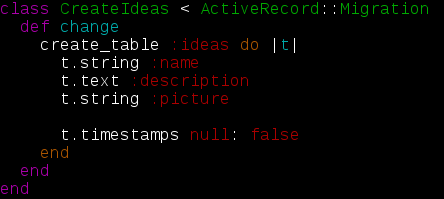

Crear una idea con Scaffold
El concepto IDEA
Vamos a añadia usar la funcionalidad de scaffold para generar un punto de partida que nos permita listar, agregar, eliminar, editar, y ver cosas; en nuestro caso ideas.
-
¿Qué representa este objeto/modelo?
-
¿Qué atributos o propiedades tiene?
-
¿Qué operaciones podremos hacer sobre él?
MVC (Modelo Vista Controlador)
-
El modelo
Es la representación de la información sobre la que operamos y aquellas operaciones referidas al acceso y actualización de dicha información.
-
El controlador
Gestiona las peticiones de los usuarios y realiza peticiones al modelo cuando se realiza alguna solicitud. Hace de intermediario entre la vista y el modelo.
-
La vista
Presenta el modelo. Puede acceder al modelo pero no cambiar su estado.
Los modelos y controadores son los responsbles para la generación de las vistas

Scaffold
Esta instrucción genera la siguiente salida
En caso que queramos deshacer lo realizado
Scaffold, andamiaje
El scaffold nos permite generar automáticamente las operaciones básicas para trabajar sobre un objeto.
- Genera el modelo.
- Genera las rutas automáticamente.
- Genera las migraciones
- Genera ficheros css y javascript
- Genera vistas y controlador del (CRUD):
- Creación de una idea.
- Modificación de una idea.
- Eliminación de una idea.
- Detalle de la idea.
- Listado de ideas.
Migraciones
- Los ficheros de migración nos permiten crear y modificar nuestra base de datos de manera organizada y estrucutrada.
- Las migraciones se crean en la carpeta
db/migrate
- Los ficheros de migración contienen en el nombre un [YYYYMMDDHHMMSS] que permitirá ejecutarlos de manera secuencial.
- Las migraciones son independientes del manejador de la base de datos.

Arrancamos el servidor
Vamos a ver nuestros cambios en el servidor, lo arrancamos:
Abrimos nuestro navegador con la siguiente url:
http://localhost:3000/ideas
Layout y parcials
Veamos los ficheros que se nos han generado bajo la ruta app/views
- Yield, ¿magia?
- Render partials
- Don't Repeat Yourself
Diseño, añadir enlace Twitter Bootstrap
La aplicación no es muy atractiva visualmente, usaremos Twitter Bootsrap para darle una apariencia más sofisticada.
- Abrimos en nuestro editor el fichero app/views/layouts/application.html.erb
- Añadimos la referencia a Twitter Bootstrap colocando:
sobre la línea
quedando el fichero de la siguiente forma:
Diseño, un poquito de maquetación
- Añadamos un contenedor con clases que hacen referencia a Bootstrap, reemplazamos:
por
- Y un menú, bajo la etiqueta
añadimos:
- Y un pie, por ejemplo:
Diseño, darle color a nuestra aplicación
Los ficheros de estilos se encuentran app/assets/styleshetts/
- Abrimos el fichero de estilos
app/assets/stylesheets/application.css
- Y añadimos al final del fichero:
- Reiniciamos el servidor
rails server
/